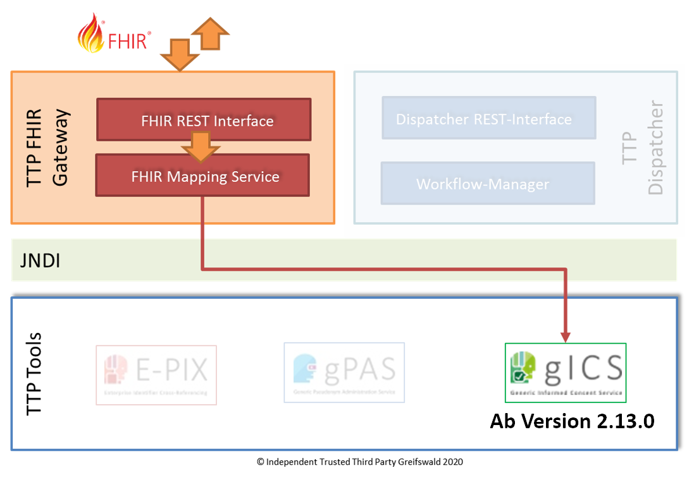

2025.1.0 - ci-build
IGTTPFHIRGatewaygICS - Local Development build (v2025.1.0) built by the FHIR (HL7® FHIR® Standard) Build Tools. See the Directory of published versions
OperationDefinition: All consents for template
| Official URL: https://ths-greifswald.de/fhir/OperationDefinition/gics/allConsentsForTemplate | Version: 2025.1.0 | |||
| Active as of 2025-06-12 | Computable Name: AllConsentsForTemplate | |||
Liefert alle Consente eines spezifischen TemplateFrame unter Angabe des TemplateFrame-Identifiers (Vorlagenbezug) per POST-Request. Die Rückgabe erfolgt als Bundle vom Typ "collection". Das Bundle enthält je Consent einen Bundle-Entry, der alle für den spezifischen Consent relevanten Ressourcen (z.B. TemplateFrame, QuestionnaireComposed, QuestionnaireResponse, Provenance) enthält. Details zu den verwendeten Profilen unterhttps://ig.fhir.de/einwilligungsmanagement/stable/Home.html
Teil des FHIR Gateway für gICS. Weitere Infos unter https://ths-greifswald.de/gics
Unterstützt ab TTP-FHIR Gateway Version 2.1.0

Voraussetzung
- Spezifizierte Domäne muss angelegt sein
- Es muss eine gültige Einwilligung mit dem gegebenen personIdentifier existieren
- Das spezifizierte Template muss Grundlage einer gültigen Einwilligung sein
Language: de-DE
URL: [base]/$allConsentsForTemplate
Parameters
| Use | Name | Scope | Cardinality | Type | Binding | Documentation |
| IN | template | 1..1 | string | Angabe der eindeutigen TemplateId in Form des TemplateFrame.Identifier.Value für das vorbelegte Template.Identifier.System "https://ths-greifswald.de/fhir/gics/" | ||
| IN | domain | 1..1 | string | Angabe der Einwilligungsdomaene | ||
| IN | _profile | 0..1 | canonical | Angabe um Ausgabeprofil festzulegen. Default ist die gics-Variante; alternativ das Profil aus dem IG Einwilligungsmanagement. | ||
| OUT | return | 0..1 | Bundle | Bundle mit den beschriebenen Inhalten |
Liefert alle Consente eines spezifischen TemplateFrame unter Angabe des TemplateFrame-Identifiers (Vorlagenbezug) per POST-Request. Die Rückgabe erfolgt als Bundle vom Typ "collection". Das Bundle enthält je Consent einen Bundle-Entry, der alle für den spezifischen Consent relevanten Ressourcen (z.B. TemplateFrame, QuestionnaireComposed, QuestionnaireResponse, Provenance) enthält. Details zu den verwendeten Profilen unterhttps://ig.fhir.de/einwilligungsmanagement/stable/Home.html
Hinweise
Rückgabe
Paging entsprechend der FHIR Search API wird ab TTP-FHIR Gateway Version 2023.1.1 unterstützt, namentlich die Parameter
- _count: (maximale) Anzahl der im Bundle enthaltenen Ressourcen
- _offset: fortlaufende Nummer der ersten im Bundle enthaltenen Ressource
Der Default-Offset ist 0. Der Default-Count ist 100. Negative Werte für _offset und _count sind nicht erlaubt. Werden weder _count noch _offset angegeben, enthält das Bundle maximal 100 Ergebnisse (Default-Count=100, Default-Offset=0).
Im Erfolgsfall wird der HTTP Statuscode 200 zurückgegeben.
Im Fehlerfall wird einer der folgenden HTTP Statuscodes in Verbindung mit einer OperationOutcome-Ressource zurückgegeben:
- 400: Fehlende oder fehlerhafte Parameter.
- 401: Fehlende Authentifizierung oder Autorisierung.
- 404: Parameter mit unbekanntem Inhalt.
- 422: Fehlende oder falsche Patienten-Attribute.